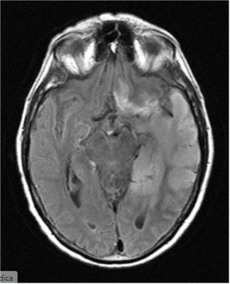
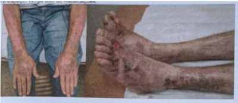

Questão 1 · Fisiopatologia · Neurologia · Fatores de Risco e Predisponentes · 4000184529Um paciente de 79 anos de idade foi internado para realizar procedimento eletivo de colocação de prótese em joelho direito. No terceiro dia de internação, passou a apresentar quadro de utuação do nível de consciência e pensamento desorganizado, com dificuldade para manter atenção nas conversas com os enfermeiros e com os médicos. Com base nesse caso clínico, assinale a alternativa correta.
A Trata-se, provavelmente, de um quadro infeccioso, devendo-se iniciar antibioticoterapia empírica e solicitar a realização de exames laboratoriais de rastreio infeccioso.
B Deve-se realizar um exame de neuroimagem, podendo ser ressonância nuclear magnética ou tomografia computadorizada de crânio. Caso os exames não apresentem alteração, deve-se realizar a coleta de líquor.
C Esse quadro é comum em idosos internados que possuem o diagnóstico de doença de Alzheimer. Dessa forma, pode-se inferir que, provavelmente, o paciente possui esse diagnóstico.
D Trata-se de uma síndrome clínica que pode ocorrer em idosos internados. No entanto, essa condição não impede a alta hospitalar, caso sejam investigados e afastados os principais fatores desencadeantes.
E O paciente deve ser encaminhado para a unidade de terapia intensiva até esclarecimento diagnóstico do motivo da confusão mental.
Questão 3 · Quadro Clínico · Tratamento · Neurologia · 4000184384Homem, 87a, foi hospitalizado há quatro dias por sepse secundária à pneumonia, em uso de amoxicilina-clavulanato. No terceiro dia de tratamento, iniciou episódios de confusão e agitação, apesar das medidas para não interromper o seu sono à noite e do uso adequado dos óculos. Nega dor. Antecedentes pessoais: hipertensão arterial em uso de propranolol, hidroclorotiazida e enalapril. Exame físico: PA=132x74mmHg; FC=76bpm; FR=16irpm; temperatura=36,7ºC; oximetria de pulso=96% (ar ambiente). Neurológico: sem dé cit focal; vígil e desorientado temporalmente. MAIS APROPRIADA PARA O TRATAMENTO E PREVENÇÃO DO DELIRIUM NESTE PACIENTE É:
A Iniciar haloperidol.
B Iniciar lorazepam.
C Mobilizar precocemente.
D Retirar a hidroclorotiazida. ida oib pr ed
Questão 4 · Quadro Clínico · Neurologia · Fatores de Risco e Predisponentes · 4000184117Mulher, 83 anos, é trazida ao pronto-socorro com queixa de sonolência excessiva há três dias. Apresenta antecedente de hipertensão arterial, dislipidemia e síndrome demencial, com dependência parcial para atividades básicas, e total para atividades instrumentais de vida diária. Sua lha conta que, ao longo do último mês, sua mãe se tornou mais apática, apresentou edema progressivo de membros inferiores e, há 1 semana, está confusa, estando há 3 dias bastante sonolenta, com piora no dia de hoje. Ao exame clínico, nota-se que a paciente tem pontuação zero na Richmond está desatenta e, em alguns momentos, apresenta pensamento desorganizado. Além disso, tem edema de membros inferiores 3+/4+ e apresenta estertores finos em base direita. Considerando as hipóteses clínicas e a linha de cuidado, qual é a alternativa melhor associada ao caso clínico?
A A paciente apresenta
B Deve-se solicitar autorização da filha para tomada de decisão sobre a execução de medidas invasivas, como a entubação orotraqueal.
C Há elementos suficientes para estabelecer que a paciente virá a óbito nas próximas horas ou dias, período este considerado processo ativo de morte.
D A apresentação neurológica do quadro indica progressão da síndrome demencial de base, o que contraindica o uso de antibióticos.
Questão 5 · Quadro Clínico · Tratamento · Neurologia · 4000183651Uma senhora de 85 anos de idade está no 2º pós-operatório de colecistectomia laparoscópica por colecistite aguda co m empiema, perfurada e bloqueada. A operação não teve intercorrências. A paciente passou a apresentar confusão mental, alucinações e agitação. Pulso: 80 bpm, regular, PA: 120 × 70 mmHg. T: 36,5 °C, SatO₂: 98%, em ar ambiente. O exame do abdome revela um pouco de dor em hipocôndrio direito. Está em uso de ceftriaxona, losartana, metformina, rosuvastatina, alopurinol e hidroclorotiazida. A conduta diante do diagnóstico mais provável deve ser
A ampliação da antibioticoterapia para incluir imipenem.
B reavaliar as medicações e procurar distúrbios hidroeletrolíticos.
C anticoagulação plena.
D AAS.
E suspensão da ceftriaxona.
Revisar: possível letra faltando em enunciado
Questão 6 · Escala de Coma de Glasgow · Escala de Coma de Glasgow · Neurologia · 4000183339Qual dos seguintes componentes da escala de GLASGOW é a mais preditiva de desfechos neurológicos?
A Abertura ocular.
B Resposta verbal.
C Resposta motora.
D Lucidez.
Questão 7 · Encef alopatia de WernickeKorsakof f · Quadro Clínico · Neurologia · 4000183282Um homem de quarenta anos de idade, em situação de rua, foi levado pelo SAMU ao hospital, devido a rebaixamento do nível de consciência em via pública. Na admissão, foram verificados sinais de desnutrição importante, hálito etílico e glicemia de 25 mg/dL. O paciente foi tratado exclusivamente com glicose endovenosa, evoluindo com melhora do nível de consciência e surgimento de confusão mental, nistagmo e ataxia. Foi realizada uma tomogra a de crânio, cujo resultado está representado abaixo. Com relação ao caso clínico acima, assinale a alternativa que apresenta, respectivamente, o diagnóstico mais provável e o tratamento indicado ao paciente.

A encefalopatia de Wernicke — reposição de tiamina
B hematoma epidural — craniectomia descompressiva
C deficiência de vitamina A — reposição de retinol
D hemorragia intraparenquimatosa — derivação ventricular
E esclerose lateral amiotrófica — plasmaférese
Questão 8 · Neurologia · PréRequisitos · Exame Clínico · 4000182506Durante a avaliação da morte encefálica, é necessário conhecer a meia-vida dos principais sedativos e bloqueadores neuromusculares que, eventualmente, o paciente tenha recebido. Assinale alternativa que apresenta a correta associação entre medicamento e sua meia-vida padrão.
A Quetamina e 15 minutos.
B Etomidato e 60 minutos.
C Fentanil e 120 minutos.
D Midazolam e 30 minutos.
E Succcinilcolina e 30 minutos.
Questão 9 · Tratamento · Neurologia · Estado Conf usional Agudo Delirium · 4000181254Idoso, 87 anos, institucionalizado, é levado ao pronto- -atendimento com quadro de agitação, agressividade e piora de alucinações há dois dias. Tem antecedente de síndrome demencial, hipertensão, dislipidemia e hipotireoidismo. Em sua chegada ao serviço hospitalar, encontra- se extremamente agitado e bastante agressivo, sendo impossível o exame físico ou a coleta de exames. Assinale a alternativa que apresenta a conduta mais apropriada nesse momento.
A Fenitoína subcutânea.
B Morfina subcutânea.
C Haloperidol intramuscular.
D Diazepam oral.
E Contenção física mecânica.
Questão 10 · Morte Encef álica · Código de Ética Médica CEM · 4000168386Assinale a assertiva incorreta relativa a condutas médicas segundo o Código de Ética Médica.
A A decisão compartilhada com a família de que não serão mais adotadas medidas de suporte vital ao paciente que esteja em estado terminal de doença incurável, para o qual se tenham esgotado os recursos de tratamento curativo, é eticamente aceitável, mesmo que isso possa apressar a morte.
B O não fornecimento de atestado de óbito a idoso que tenha falecido no Centro de Tratamento Intensivo (CTI) por complicações infecciosas após vários dias de internação em decorrência de fraturas múltiplas não esclarecidas tem amparo no Código de Ética Médica.
C A não abertura de protocolo de morte encefálica em paciente admitido no CTI com quadro clínico sugestivo e compatível com morte encefálica está justificada se o paciente for sabidamente portador de covid-19, não podendo, portanto, ser potencial doador de órgãos para transplante.
D A revelação de gravidez aos pais de adolescente incapaz não fere o sigilo médico e o direito à privacidade da mesma, pelo risco de envolver potencial dano ao feto.
Questão 11 · PréRequisitos · Morte Encef álica · Cirurgia · 4000167356Homem 31a, recebeu golpe de estrangulamento (“mata leão”) durante uma briga, até apresentar parada cardiorrespiratória (PCR). O atendimento pré- hospitalar realiza aquisição de uma via aérea definitiva e um acesso venoso, e inicia manobras de reanimação cardiopulmonar cerebral, obtendo retorno dos pulsos centrais. O tempo da PCR foi de 8 minutos. É levado a um hospital terciário, onde após 20 horas de Unidade de Terapia Intensiva, sob cuidados clínicos e ventilação mecânica evoluiu com: Escala de Glasgow= 3, sem sedação, pupilas midriáticas sem reação ao estímulo luminoso, T= 35,8°C, PA média= 68mmHg. Sódio sérico= 148mEq/L. OS PRÉ-REQUISITOS QUE IMPEDEM O INÍCIO DO PROTOCOLO DE MORTE ENCEFÁLICA SÃO
A Sódio sérico e pressão arterial média.
B Tempo de tratamento e observação.
C Temperatura axilar e tempo de PCR.
D Pressão arterial média e temperatura axilar.
Questão 12 · Escala de Coma de Glasgow · Escala de Coma de Glasgow · Escala de Coma de Glasgow · 4000166373Uma paciente de 13 anos foi levada ao pronto-socorro com rebaixamento do nível de consciência. A mãe relata que, no dia anterior, percebeu a lha mais lenta ao se deitar. Acordou com o barulho dela se “debatendo” de madrugada por cerca de cinco minutos, após os quais ela cou muito sonolenta. Foi admitida sonolenta, com resposta inespecí ca motora ao estímulo doloroso, falando palavras desconexas e abrindo os olhos ao ouvir seu nome. O exame neurológico cou prejudicado pela sonolência, mas apresentava discreta rigidez de nuca, sem outras alterações relevantes. Foi realizada uma tomogra a computadorizada de crânio que veio sem alterações. O liquor foi colhido e estava límpido, com 10 células, 100% linfócitos, proteína e glicose normais. Optou-se por realizar uma ressonância magnética cerebral que apresentou discreto hiper-sinal em T2 e FLAIR nas regiões temporais. Qual o valor da escala de coma de Glasgow na admissão do paciente?
A Seis.
B Oito.
C Dez.
D Doze.
Revisar: possível letra faltando em enunciado
Questão 13 · Neurologia · Fatores de Risco e Predisponentes · 4000166310Diversos medicamentos usados na prática clínica em doses habituais podem provocar alternativa que, segundo os critérios de Beers, apresenta fármacos a serem evitados em idosos pelo potencial risco de confusão mental.
A Benzodiazepínicos e inibidores de bomba protônica.
B Anti-histamínicos de primeira geração e inibidores da acetilcolinesterase.
C Antidepressivos tricíclicos e relaxantes musculares.
D Antipsicóticos e inibidores seletivos da recaptação de serotonina.
Questão 14 · Neurologia · Morte Encef álica · Avaliação Inicial · 4000164660Um paciente masculino, 21 anos, é admitido na emergência intubado após acidente de trânsito. Colisão de moto × carro. Apresenta-se com hematoma periorbital bilateral, otorragia esquerda, escala de coma de Glasgow com três pontos, pupilas médias e não reativas à luz, ausência de reflexo córneo-palpebral e da tosse e sem respiração espontânea detectável. Sinais vitais: pressão arterial de 110/70 mmHg, frequência cardíaca de 112 bpm, frequência respiratória determinada pelo ventilador de 16 irpm, saturação e oxigênio de 92% com fração inspirada de 35% e temperatura axilar de 34,5°C. Assinale a alternativa correta em relação ao caso clínico apresentado.
A A temperatura axilar acima de 34,5°C permite a realização dos testes para diagnóstico de morte encefálica, sem risco de falso-positivo.
B O paciente deve ser tratado por, pelo menos, 6 horas antes de iniciarmos os procedimentos para diagnóstico de morte encefálica.
C Podemos iniciar os procedimentos para diagnóstico de morte encefálica, descartando a necessidade de realização de tomografia de crânio, uma vez que o paciente apresenta um TCE grave, com Glasgow 3, arreflexia de tronco e ausência de respiração.
D As pupilas médias contraindicam o início dos procedimentos para o diagnóstico de morte encefálica, sendo necessária a presença de midríase fixa bilateral.
E Na presença de edema encefálico bilateral grave, com apagamento de sulcos, cisuras e cisternas, o paciente deve ser submetido à craniectomia descompressiva bi-frontal.
Questão 15 · Transtorno Psicóticos · Estado Conf usional Agudo Delirium · 4000164490Paciente pós-cirúrgico cardíaco a céu aberto, em sala de recuperação, começa a acordar e falar que quer ajuda para descer do leito, pois quer conversar com seus amigos que estão no restaurante, onde costuma almoçar, no mercado público da cidade. Segundo os argumentos do paciente, estão próximos ao seu automóvel, para o qual aponta, como se estivesse efetivamente estacionado naquele andar do hospital. O médico procura tranquilizar o paciente, porém este, à medida que se recupera do processo cirúrgico e anestésico, ca cada vez mais agitado e agressivo. Sobre o caso, assinale a alternativa INCORRETA.
A A solicitação de exames laboratoriais como hemograma, provas de função hepática e renais, eletrólitos, entre outros, podem auxiliar na elucidação da origem do quadro clínico.
B Trata-se de um quadro clínico característico de um paciente com Transtorno Delirante Tipo Somático prévio.
C Trata-se de um Transtorno Neurocognitivo, no caso, um quadro de delirium, podendo ser decorrente tanto do processo cirúrgico e anestésico quanto de abstinência ou intoxicação por fármacos ou outras substâncias.
D Este paciente apresenta, entre outras, alterações no nível de consciência, orientação e atenção.
Questão 16 · Neurologia · PréRequisitos · Exame Clínico · 4000164381Paciente sexo masculino, 25 anos, vítima de acidente de moto versus auto, com traumatismo cranioencefálico grave, evolui com pupilas médio xas e ausência de reflexos de tronco cerebral. Sobre morte encefálica (ME) e seu diagnóstico é correto afirmar:
A O intervalo de tempo entre os exames clínicos para o diagnóstico de ME em adultos é de 6 horas.
B O teste da apneia será considerado positivo para ME caso não existam quaisquer movimentos respiratórios e a pCO₂ acima de 55 mmHg.
C O eletroencefalograma não é uma opção de exame complementar para o diagnóstico de morte encefálica.
D Em caso de contraindicação para doação de órgãos ou negativa familiar, o suporte avançado de vida deve ser suspenso se a família concordar.
Questão 17 · Saúde do Idoso geriatria · Antipsicóticos · Estado Conf usional Agudo Delirium · 4000164287Mulher, 85 anos, portadora de síndrome da fragilidade e hipertensão arterial sistêmica. Interna devido a pneumonia e evolui, no segundo dia de internação, com agitação e confusão mental. Ao exame físico: REG, confusa, desidratada 1+/4+. PA: 149 x 68 mmHg, FC 92 bpm, FR: 18 irpm, satO₂: 94% com cateter nasal a 2 L/min. Ausculta pulmonar: MV presente, com roncos de transmissão difusos. Ausculta cardíaca sem alterações. Abdome doloroso à palpação difusa, sem massas ou visceromegalias palpáveis. Em relação à alteração comportamental, qual é o tratamento medicamentoso mais adequado?
A Diazepam.
B Clorpromazina.
C Clonazepam.
D Haloperidol
Questão 18 · Neurologia · PréRequisitos · Exame Clínico · 4000164253Criança de 2 meses, admitida após traumatismo crânio-encefálico por acidente automobilístico (capotamento), com duas mortes na cena. Foi submetido a drenagem de hematoma subdural e craniectomia descompressiva. No segundo dia pós- operatório, encontra-se intubada, com escala de coma de Glasgow de 3, midríase xa bilateral e ausência bilateralmente dos reflexos córneo-palpebrais, óculo-cefálicos, e vestíbulo-calóricos, além de ausência do reflexo de tosse. Sua pressão arterial é de 70 x 52 mmHg, sua temperatura é de 37°C e seus exames de sangue mostram eletrólitos, função renal e hepática dentro dos valores normais. Retirados os sedativos (midazolam e fentanil) há 20 horas. Com relação ao diagnóstico de morte encefálica (ME), qual das condutas abaixo é a mais adequada neste momento?
A Comunicar a família que será aberto protocolo de ME.
B Realizar angiografia cerebral.
C Iniciar a primeira prova de ME após 4 horas.
D Realizar teste de apneia.
Questão 19 · Pediatria · Estado Conf usional Agudo Delirium · 4000146083Assinale a alternativa incorreta em relação ao delirium em pediatria.
A O delirium é uma disfunção muito estudada nas UTIs em adultos, porém ainda pouco avaliada na pediatria.
B Um dos fatores de risco conhecidos para delirium é o uso de midazolan; portanto, deve ser realizado com parcimônia, e, se possível, considerar o uso de outros sedativos.
C Apesar de o delirium ainda ser pouco diagnosticado e monitorado nas UTIs pediátricas, há escalas para sem aplicadas, como a p-CAM e CAP-D, para diagnóstico e seguimento dos pacientes.
D As medidas comportamentais, como mobilização precoce e promoção do ciclo sono-vigília, pouco interferem na prevenção do delirium.
Questão 20 · Encef alopatia de WernickeKorsakof f · Neurologia · 4000145468Homem de 58 anos é levado ao pronto atendimento devido a di culdade de deambulação. Sua esposa relata que o quadro teve início abrupto há três dias. Sem outros sintomas. Nega comorbidades ou uso regular de medicamentos. Paciente consome bebida alcoólica diariamente há mais de 5 anos; atualmente, média de 1/2 garrafa de cachaça ao dia. Ao exame físico, apresenta-se em regular estado geral, emagrecido, musculatura hipotró ca, hipocorado +/4+, hidratado, anictérico. PA 130X90mmHg, FC 90bpm, FR 20ipm, Tax 36,6°C. Exame dos aparelhos cardiovascular, respiratório e digestivo sem alterações. Ao exame neurológico, apresenta-se alerta e orientado em relação a tempo, pessoa e lugar. Exame de pares cranianos revela prova calórica negativa e nistagmo à mirada horizontal bilateral. Re exo aquileu 1/1. Marcha lenti cada, de base ampla e passos curtos. Realizou tomogra a computadorizada de crânio sem contraste, à admissão, sem alterações. Quanto ao manejo deste paciente, é CORRETO afirmar que está indicado:
A Vitamina B1 intravenosa na dose de 300mg de 24/24 horas, devendo ser iniciada após confirmação de níveis séricos deficientes
B Vitamina B1 intravenosa na dose de 500mg de 8/8 horas, devendo ser iniciada imediatamente
C Vitamina B12 intramuscular na dose de 1.000UI de 24/24 horas, devendo ser iniciada independentemente de seus valores séricos
D Vitamina B 12 via oral na dose de 1.000UI de 24/24 horas, devendo ser iniciada após confirmação de níveis séricos deficientes
Revisar: possível letra faltando em enunciado
Questão 21 · Neurologia · Padrão Respiratório · 4000144608A respiração do tipo neurogênica central é caracterizada por um quadro de hiperventilação rápida e sustentada, em geral, com frequência respiratória entre 40 e 70 por minuto. É observada em pacientes com:
A lesões do tegumento pontino central, ventral ao aqueduto ou ao quarto ventrículo.
B alterações metabólicas da hipoxemia devido ao comprometimento pulmonar.
C lesões bilaterais entre o prosencéfalo e a região superior da ponte.
D lesões na porção inferior da ponte e superior do bulbo.
Questão 22 · Estado Conf usional Agudo Delirium · 4000144418Paciente idoso de 69 anos internado na UPA da Sobral com sintomas de agitação e agressividade com 2 dias de evolução segundo a lha do paciente. Realizados exames de hemograma e de radiogra a de tórax, que evidenciaram uma leucocitose de 14.400 com desvio a esquerda e uma radiogra a com in ltrado em terço médio e base direita. Foi realizada internação do paciente com diagnóstico de Delirium hiperativo secundário à pneumonia. Para tratamento da pneumonia foi iniciado antibioticoterapia, e a conduta mais adequado para o tratamento do delirium é a prescrição de:
A Benzodiazepínicos.
B Antidepressivo atípico.
C Antipsicótico.
D Anticolinesterásico.
Questão 23 · Escalas de Avaliação do Nível de Consciência · Avaliação Clínica · Neurologia · 4000144348Paciente internado na Unidade de Emergência de um hospital com traumatismo cranioencefálico (TCE). Na escala de coma de Glasgow ele apresenta as seguintes características: abertura ocular a dor, resposta verbal com palavras inapropriadas e resposta motora com localização da dor. Com base nesses dados é correto a rmar que os valores de escore atribuídos na escala correspondem respectivamente a:
A 2, 3 e 5.
B 2, 3 e 4.
C 2, 2 e 5.
D 2, 2 e 4.
Questão 24 · Encef alopatia de WernickeKorsakof f · 4000144250Homem, 55 anos, etilista crônico de 1 litro de destilado/dia, apresenta perda da memória e quedas frequentes. Exame físico: ataxia de marcha e nistagmo, sem alterações de sensibilidade periférica. Exames laboratoriais: hemograma [Hb: 12 g/dl, Ht: 36%, VCM: 93 (VN: 80-95), HCM: 32 pg (VN: 27-33), plaquetas: 160.000/mm³ ], bilirrubina total 1,2 mg/dl (VN: 0,2-1,2). Qual é a deficiência vitamínica mais provável?
A Niacina.
B Piridoxina.
C Tiamina.
D Cianocobalamina.
Questão 25 · Neurologia · Hipertensão Intracraniana · 4000143792Paciente de 34 anos, sexo feminino, deu entrada na emergência com queixa de cefaleia e embaçamento visual há 1 dia, sem melhora com o uso de analgésicos, evoluindo há algumas horas com confusão mental. Sem comorbidades prévias. Na admissão, PA de 220/170mmHg, sendo realizada fundoscopia que demonstrou papiledema. Exame físico resumido: FC 115bpm; FR 20irpm; respiratório: murmúrios simétricos e sem ruídos adventícios; cardiovascular: bulhas rítmicas, normofonéticas em 2 tempos, sem sopros; gastrointestinal: abdome globoso, ácido e indolor à palpação; membros inferiores: pulsos cheios, edema simétrico +/IV; neurológico: Glasgow 14 (AO: 4 RM: 6 RV: 4), sem dé cits focais. Tomografia de crânio de admissão normal. Sobre o caso clínico é
A A tomografia de crânio deve ser feita para descartar causa hemorrágica para o quadro. A confusão mental de instalação aguda pode ter inúmeras causas: metabólicas, tóxicas e infecciosas; porém o aparecimento agudo sempre levanta a suspeita de causa central, principalmente evento cerebral hemorrágico, sendo a elevação da pressão arterial um dado do quadro clínico que aumenta a sua suspeita.
B O diagnóstico da paciente é de encefalopatia hipertensiva, que é definida como uma síndrome cerebral orgânica aguda, caracterizada por uma falência da autorregulação vascular cerebral e caracterizada pela seguinte tríade: hipertensão grave, alteração do nível de consciência e edema de papila.
C O manejo inicial dessa paciente pode ser feito com iECA e bloqueadores de canal de cálcio via oral e diurético de alça intravenoso. O objetivo é reduzir a pressão arterial média (PAM) no máximo em 25% nas primeiras 24 horas, sendo feito uma redução de 10 a 15% da PAM na primeira hora.
D Paciente jovem com quadro de hipertensão grave deve levantar a suspeita de causa secundária para a hipertensão. Na investigação da síndrome de Cushing, a dosagem do cortisol sérico matinal após a supressão noturna com dexametasona e a dosagem do cortisol urinário em 24 horas são exames de escolha para esta investigação.
Questão 26 · Quadro Clínico · Tronco Encef álico e Cerebelo · Neurologia · 4000143012O par craniano acometido com mais frequência no aumento da pressão intracraniana é:
A III
B IV
C V
D VI
Questão 27 · Encef alopatia de WernickeKorsakof f · 4000142483Um paciente alcoolista de 45 anos e com aparência de desnutrido é levado a atendimento por desorientação e confabulações. Apresenta oftalmoplegia e nistagmo. PA 160/60 mmHg. Esse quadro indica
A encefalopatia alcoólica.
B encefalopatia hepática.
C deficiência de tiamina.
D deficiência de folato.
E encefalopatia hipertensiva.
Questão 28 · Neurologia · Coma e Alterações da Consciência · Morte Encef álica · 400014151712 horas após admissão no hospital, é aberto protocolo de morte encefálica em paciente jovem vítima de TCE grave. Qual das características a seguir impossibilitaria, momentaneamente, o seguimento do protocolo para efetivar o diagnóstico?
A Tempo de admissão menor do que 24 horas.
B Hiponatremia.
C Noradrenalina 0,2 mcg/kg/min., para manter PAM 70 mmHg.
D Temperatura de 32 graus.
E Disfunção renal.
Questão 29 · Quadro Clínico · Neurologia · Fatores de Risco e Predisponentes · 4000140729Paciente, sexo feminino, 80 anos, é internada na enfermaria de clínica médica com quadro de pneumonia bacteriana grave. Tem antecedente de Hipertensão Arterial Sistêmica (HAS) em uso de losartana 50 mg/dia. É lúcida, independente para as atividades básicas de vida diária e reside sozinha. No período noturno do primeiro dia de internação, apresenta quadro de agitação, retira o acesso venoso, desesperando-se de medo e não respondendo às perguntas. Em relação ao quadro apresentado, assinale a afirmativa correta.
A São critérios diagnósticos dessa condição: mudança aguda do estado mental, pensamento desorganizado e manutenção da atenção.
B O diagnóstico provável é de síndrome demencial de início agudo devido ao quadro de pneumonia grave.
C O diagnóstico é estado confusional agudo ou
D O diagnóstico é estado confusional agudo caracterizado por síndrome cerebral orgânica de início agudo com curso flutuante e transitório.
Questão 30 · Tratamento · Neurologia · Fatores de Risco e Predisponentes · 4000140427Contém um fator predisponente, um fator precipitante e uma forma de prevenção do
A Idade > 65 anos; infecção; manter boa iluminação de dia e limitá-la à noite.
B Sexo feminino; distúrbios metabólicos; manter calendários e relógios no ambiente do paciente.
C Prejuízo cognitivo preexistente; desidratação; uso de neuroléptico profilático.
D Episódio prévio de
E Sexo masculino; realização de cirurgia; permitir o uso de óculos e aparelhos auditivos de uso prévio.
Questão 31 · Saúde do Idoso geriatria · Psicof armacologia · Estado Conf usional Agudo Delirium · 4000140260A síndrome confusional aguda (delirium) é um diagnóstico psiquiátrico comum nos hospitais gerais. Quanto ao tratamento do delirium, é correto afirmar:
A As intervenções não farmacológicas constituem a primeira etapa no manejo de um paciente com suspeita de delirium.
B O uso de benzodiazepínicos está indicado em casos de delirium em idosos.
C Óculos e aparelhos auditivos devem ser retirados para evitar que o paciente se machuque.
D O quarto deve ser o mais escuro possível, para se evitar hiperestimulação sensorial.
E O uso de haloperidol tem sido abandonado, em favor dos antipsicóticos de segunda geração.
Questão 32 · Neurologia · Estado Conf usional Agudo Delirium · 4000129733Assinale a alternativa correta quanto ao delirium.
A Benzodiazepínicos são medicamentos de primeira escolha no controle do delirium misto.
B Infecções, dor e mesmo constipação podem desencadear delirium em idosos frágeis.
C Sepsis e a síndrome paraneoplásica são as duas causas mais frequentes de delirium em pacientes oncológicos.
D O uso profilático de haloperidol em baixas doses reduz a ocorrência de delirium em pacientes de alto risco.
E A risperidona é contraindicada no tratamento do delirium em pacientes com história de eventos isquêmicos cerebrais e portadores de Doença de Parkinson.
Questão 33 · Escala de Coma de Glasgow · 4000129374Você está em um plantão como residente de cirurgia geral e recebe um paciente com os seguintes achados: abertura ocular ao comando de voz, resposta verbal confusa e, ao estímulo, localiza a dor. A pontuação da escala de coma de Glasgow é igual a:
A 13.
B 12.
C 11.
D 10.
Questão 34 · Coma e Alterações da Consciência · 4000129229Paciente de 15 anos foi admitido no Centro de Tratamento Intensivo após acidente por submersão. Encontrava-se em coma, necessitando de suporte ventilatório. Após as primeiras 24 horas de observação, as avaliações clínica e neurológica sugeriram que o paciente apresentava morte encefálica (ME) Com base no caso, assinale a alternativa que contempla condições clínicas para a realização dos procedimentos para determinação de ME de acordo com a Resolução n° 2.173/2017, do Conselho Federal de Medicina.
A Coma prolongado, ausência de reatividade supra espinhal e respiração agônica
B Coma não perceptivo, ausência de reatividade supra espinhal e apneia persistente
C Coma grave (Glasgow 3), pupilas dilatadas e não reagentes e respiração agônica
D Coma profundo (Glasgow 4), pupilas anisocóricas e apneia persistente
Questão 35 · Diagnóstico Dif erencial · 4000124102Paciente, 72 anos, com septicemia secundária à infecção urinária, apresenta confusão mental aguda na internação sendo medicada com haloperidol, con gurando caso de delirium, o que é comum no idoso internado. Em relação ao diagnóstico diferencial do delirium no idoso, assinale a alternativa correta.
A No delirium, a estimulação cognitiva nunca ajuda.
B Ao contrário da demência e da depressão, no delirium a consciência é clara.
C Seu principal diagnóstico diferencial são as psicoses funcionais.
D Tanto no delirium como na demência a linguagem é normal.
E Ao contrário da depressão, no delirium, a cognição é globalmente prejudicada.
Questão 36 · Morte Encef álica · Exames Complementares · 4000124060Jovem, 24 anos, tem suspeita de morte encefálica após acidente automobilístico. A família apesar de extremamente abalada, autoriza a doação de órgãos referindo ser esse um desejo do jovem. Dentre os exames abaixo, aquele que não se encontra protocolado para confirmação da morte encefálica do paciente é:
A eletroencefalografia.
B exame neurológico.
C arteriografia cerebral.
D doppler transcraniano.
E cintilografia cerebral.
Questão 37 · Tratamento da Hipertensão Intracraniana · Neurologia · Coma e Alterações da Consciência · 4000124022O tratamento cirúrgico da hidrocefalia com síndrome de hipertensão intracraniana, definido como tratamento temporário, é a:
A derivação ventriculo-peritoneal.
B derivação ventricular externa.
C derivação ventriculo-cisternal.
D derivação subduro-peritoneal.
E neuroendoscopia.
Questão 38 · Estado Conf usional Agudo Delirium · 4000120215Pacientes com declínio agudo nos níveis de consciência e cognição comumente são vistos em enfermarias e prontos- socorros. Deve-se considerar também o comprometimento agudo de atenção caracterizado pela di culdade de sustentação durante a anamnese. A partir dessas informações, assinale a alternativa que apresenta a prevalência dessa patologia em idosos nos pronto-socorro, em pacientes internados em enfermarias de cirurgia geral e em pacientes com queimaduras graves, respectivamente.
A 5%, 30% e de 5% a 11%
B 6%, 20% a de 30% e 82%
C de 15% a 21%, de 10% a 15% e 21%
D 15%, 5% e de 30 a 51%
E de 40 a 50%, 10% a de 15% e 50%
Questão 39 · Tratamento · Diagnóstico Dif erencial · 4000120140Uma idosa de 72 anos de idade, com antecedente de HAS e osteoporose, foi admitida no pronto-socorro da ortopedia com diagnóstico de fratura de colo de fêmur após queda de própria altura em sua residência. Segundo seus dois lhos, é totalmente independente e mora com seu esposo. No segundo dia de pós-operatório, o médico foi chamado pela enfermeira do setor para avaliar a paciente, que estava agitada e agressiva com equipe e familiares. Ao chegar no leito, percebeu que a paciente havia sacado todos os acessos venosos e queria se levantar a todo custo, gritando que havia sido sequestrada e tinha de fugir daquele esconderijo para dar parte do sequestro à polícia. Seu lho, que a estava acompanhando desde o início da manhã, disse nunca ter visto a mãe com aquele comportamento e que, uma hora antes, ela estava bem. Considerando essa situação hipotética, assinale a alternativa que apresenta, respectivamente, o diagnóstico e conduta mais adequada.
A demência e, com o auxílio do familiar, por intermédio de comunicação verbal, tentar distrair e acalmar a paciente; caso a agitação persista, prescrever memantina oral
B delirium e, com o auxílio da equipe de enfermagem, conter mecanicamente a paciente no leito e prescrever diazepam intramuscular
C depressão e prescrever risperidona oral
D demência e, com o auxílio da equipe de enfermagem, conter mecanicamente a paciente no leito e prescrever midazolam venoso
E delirium e, com o auxílio do familiar, por intermédio de comunicação verbal, tentar distrair e acalmar a paciente; caso a agitação persista, prescrever haloperidol intramuscular
Questão 40 · Critérios Diagnósticos · 4000120105Para o diagnóstico de delírium, segundo o algoritmo Confusion Assessment Method, são obrigatórias as seguintes características:
A pensamento desorganizado ou incoerente e déficit de memória.
B déficit de memória e dificuldade para manter a atenção.
C agitação e modificação aguda do estado mental.
D modificação aguda do estado mental e dificuldade para manter a atenção.
Questão 41 · Neurologia · PréRequisitos · Teste da Apneia · 4000119683Menina, 5 anos, vítima de colisão automóvel, estava no banco traseiro, com cinto de segurança de duas pontas e foi lançada para fora do veículo. Está no terceiro dia de internação em leito de UTI Pediátrica, evoluiu com coma não perceptivo, ausência de reatividade supraespinhal e com apneia persistente. Apresenta-se normotensa, com temperatura axilar 36ºC, SpO2 95% e com diagnóstico de lesão encefálica irreversível. Assinale a alternativa que contenha os critérios mais adequados para o diagnóstico de Morte Encefálica no caso acima, seguindo os critérios de 2017 do Conselho Federal de Medicina.
A Tempo de observação mínimo de 6 horas, intervalo entre as duas avaliações clínicas de 6 horas, incluindo, além da avaliação clínica, teste de apneia e exame complementar.
B Tempo de observação mínimo de 6 horas, intervalo entre as duas avaliações clínicas de uma hora, incluindo, além da avaliação clínica, teste de apneia e exame complementar.
C Duas avaliações clínicas no intervalo de 10 horas, acompanhadas de um exame complementar que comprove a ausência de atividade encefálica.
D Duas avaliações clínicas no intervalo de 10 horas, acompanhadas de teste de apneia.
Questão 42 · Escala de Coma de Glasgow · Escala de Coma de Glasgow · Escala de Coma de Glasgow · 4000116858Paciente de 19 anos, vítima de acidente moto-carro em via pública. Ao ser realizado o atendimento primário, o paciente tem abertura ocular ao chamado, resposta verbal desorientada, localiza o membro à realização de pressão. Apenas a pupila esquerda reage ao estímulo de luz. De acordo com a escala de coma de Glasgow com resposta pupilar (ECG-P), a pontuação desse paciente é de
A 10
B 11
C 12
D 13
E 14
Questão 43 · Escala de Coma de Glasgow · Neurologia · 4000109971Mulher, 52 anos de idade, veio trazida ao Pronto-Socorro por queixa de cefaleia e uma crise tônico-clônica generalizada que ocorreu dois dias antes da admissão. Em seguida evoluiu com sonolência. Ao exame de admissão tem temperatura de 38ºC, PA 100x60 mmHg, FC: 112bpm e restante do exame clínico geral sem alterações. No exame neurológico, encontrava-se sonolenta, com abertura ocular aos estímulos verbais vigorosos, retirada inespecí ca dos membros à dor, falando palavras desconexas, reflexos profundos globalmente vivos e reflexo cutâneo plantar em exão bilateral. Também foram observadas algumas clonias em hemiface direta. Tomogra a computadorizada de crânio mostrou uma hipoatenuação em lobo temporal esquerdo. Exames laboratoriais revelaram uma leucocitose de 13500 sem desvios à esquerda e um aumento da proteína C reativa. Foi então submetida a ma punção lombar para coleta de líquor cujo resultado foi de 41 células (66% de linfócitos, 32% de monócitos e 2% de neutró los), 48 hemácias, proteína de 59 mg/dL, glicose de 64 mg/dL e lactato de 25 mg/dL. Qual é a pontuação dessa paciente pela escala de coma de Glasgow?

A 8.
B 10.
C 12.
D 14. ida oib pr ed
Revisar: possível letra faltando em enunciado
Questão 44 · Quadro Clínico · 4000106137A encefalopatia de Wernicke é disfunção diencefálica e mesencefálica caracterizada pela tríade
A convulsão, alucinações e demência.
B coreia, depressão e miclonia.
C apraxia de marcha, bexiga neurogênica e ciatalgia.
D rigidez, bradicinesia e tremor.
E confusão, ataxia e oftalmoplegia.
Questão 45 · PréRequisitos · 4000099334Homem, 19a, interna na Unidade de Terapia Intensiva por traumatismo craniano grave. Exame físico: PA= 123x84 mmHg, FC= 104bpm, T= 36,8ºC, oximetria de pulso (FiO₂ 100%)= 100%; Neurológico: Escala de Coma de Glasgow 3, pupilas midriáticas e não fotorreagentes. PARA INICIAR O PROTOCOLO DE MORTE ENCEFÁLICA É NECESSÁRIO QUE:
A O médico pertença a equipe de transplante.
B O intervalo entre os dois exames clínicos seja de seis horas.
C Haja observação em hospital pelo período mínimo de seis horas.
D No teste de apneia, a PaCO₂ permaneça abaixo 35mmHg.
Questão 46 · PréRequisitos · Exame Clínico · 4000093951Assinale os pares cranianos que não podem ser examinados em uma criança com suspeita de morte encefálica:
A I, XI, XII
B II, IX, X
C III, VI, VIII
D III, V, XI
E VI, VII, VIII
Questão 47 · Tratamento da Hipertensão Intracraniana · Cef aleias Secundárias · Quadro Clínico · 4000082560Uma mulher de 30 anos apresenta cefaléia crônica diária, zumbido pulsátil e turvamento episódico da visão. No exame, ela apresenta papiledema. Que avaliação você realizaria?
A Ressonância magnética (RM) e punção lombar (PL);
B RM, PL e campos visuais;
C Tomografia computadorizada (TC);
D Somente PL;
E Nenhuma das alternativas anteriores;
Questão 48 · Fatores de Risco e Predisponentes · 4000032772São fatores predisponentes ao desenvolvimento de delirium.
A Procedimentos cirúrgicos, doença renal crônica.
B Mudança de ambiente, privação de sono.
C Sexo feminino, desidratação.
D Idade avançada, depressão.
Questão 49 · Avaliação Clínica · 4000026030Paciente de 27 anos, etilista pesado há cinco anos, foi levado por transeuntes ao pronto atendimento com perda de consciência e relato de convulsões. O plantonista avalia que a via aérea está pérvia, o paciente respira de forma ruidosa, com pulsos cheios e enchimento capilar menor que dois segundos, saturando 92% de oxigênio ao ar ambiente. A escala de coma de Glasgow é 9. Nesse caso, a conduta mais indicada é:
A fenitoína 50 mg/ml, quatro ampolas em SF 0,9%, 250 ml venoso, em uma hora.
B diazepam 10 mg, uma ampola venosa em bolus.
C tomografia computadorizada de crânio, sem contraste.
D tiamina 100 mg em 10 minutos, seguida de glicose 50%, 40 ml, venosos.
Questão 50 · Fatores de Risco e Predisponentes · 4000022853Na população idosa, as medicações são apontadas como causa de delirium em até 30% dos casos. O uso de três ou mais medicações foi claramente correlacionado ao maior risco do desenvolvimento de delirium, sendo a principal classe envolvida aquela de propriedades:
A anticolinérgicas.
B anti-inflamatórias.
C antimicrobianas.
D hipoglicemiantes orais.
E simpaticomiméticas.
Questão 51 · Quadro Clínico · Investigação · Critérios Diagnósticos · 4000022791Mulher de 74 anos, previamente hígida, é submetida a uma artroplastia de quadril. No segundo pós-operatório passa a apresentar alteração do ciclo sono-vigília e da atenção. Não é esperada, nesse caso, a presença de:
A agitação psicomotora.
B alucinação visual.
C elevação pressórica com taquicardia.
D eletroencefalograma alterado.
E tomografia de crânio alterada.
Questão 52 · PréRequisitos · Exame Clínico · Morte Encef álica · 4000006436Em relação ao atendimento inicial do paciente em suspeita de morte encefálica, assinale a alternativa CORRETA:
A Paciente admitido em coma aperceptivo, com pupilas midriáticas e sem reflexo corneano deve ter protocolo de morte encefálico nas primeiras horas.
B Paciente com história de parada cardíaca, revertida no pré-hospitalar, admitido em Glasgow 3 e sem drive respiratório. Deve-se descartar síndrome coronariana aguda com eletrocardiograma em 10 min, e logo iniciar protocolo de morte encefálica.
C Paciente em coma aperceptivo, com causa de coma definido por Hemorragia Subaracnoide Fisher IV, após 6 horas de atendimento, deve ter protocolo de morte encefálica iniciado.
D Paciente em coma aperceptivo, com causa de coma definido por sangramento e edema cerebral difusos após trauma cranioencefálico grave, deve ter os cuidados estabelecidos nas primeiras horas, com abordagem e preparo da família sobre doação de órgãos.
Questão 53 · Escala de Coma de Glasgow · 4000118770A escala da coma de Glasgow (ECG) é um método simples e reprodutível para avaliação neurológica. Também é utilizada para graduar a lesão cerebral traumática em leve, moderada ou grave. São critérios utilizados na avaliação da escala de Glasgow:
A Abertura ocular, resposta verbal, resposta motora.
B Fotorreatividade pupilar, resposta verbal, reflexo de Babinski.
C Abertura ocular, resposta verbal, tônus esfincteriano.
D Fotorreatividade pupilar, resposta verbal, resposta sensitiva.
Questão 54 · Quadro Clínico · Diagnóstico Dif erencial · Fatores de Risco e Predisponentes · 4000113629Homem de 77 anos, internado há três dias em ala, em função de sonolência excessiva diurna com agitação noturna e decaimento do estado geral. Tem diagnóstico de Doença de Alzheimer há cerca de 01 ano, no entanto, apresentava bom estado funcional, sendo independente e reconhecendo familiares. Também era portador de Hiperplasia Prostática Benigna, em uso de sonda vesical de demora em domicílio há 03 meses, por indicação urológica. Por volta das 03 horas da manhã do quarto dia de internação, apresentou-se muito agitado, falando que seu pai (já falecido) estava ao seu lado, e com discurso desconexo. Em relação ao quadro, marque a alternativa correta.
A O paciente deve ser medicado com benzodiazepínicos de curta ação.
B Sonda vesical de demora é fator de risco para o surgimento deste quadro, sendo indicado o haloperidol.
C Hipocalemia/hipercalemia são causas bem documentas de estado confusional agudo no idoso.
D Esta intercorrência representa alteração esperada na história natural da Doença de Alzheimer.
E A melhor abordagem farmacológica neste caso seria a combinação clorpromazina e Prometazina.
Questão 55 · Tratamento · 4000112961Paciente de 90 anos dá entrada no pronto-socorro com quadro de agitação, agressividade e piora de alucinações, relatado pela cuidadora, com início há 2 dias. Tem antecedente de síndrome demencial, hipertensão, dislipidemia e hipotireodismo. Paciente muito agitado ao exame físico, difícil de examinar, agressivo com equipe assistencial. Qual melhor conduta nesse momento?
A Restrição física no leito.
B Haloperídol intramuscular.
C Midazolan endovenoso.
D Fenitoína endovenosa.
E Diazepam via oral.
Questão 56 · Tratamento da Hipertensão Intracraniana · 4000111259São medidas para a redução da Pressão Intracraniana, EXCETO:
A sedação e analgesia.
B hiperventilação.
C hipotermia.
D soluções hipotônicas.
Questão 57 · Diagnóstico Dif erencial · Def iciênciaPelagra · 4000108505Homem, 41 anos, hipertenso e etilista crônico. Há 20 dias apresenta lesões de pele (ver guras) associadas à diarreia. Familiares relatam que o paciente apresenta episódios de desorientação no tempo e espaço. Nega uso de medicações. Qual o tratamento mais adequado?

A Tiamina.
B Cobalamina.
C Riboflavina
D Nicotinamida.
Questão 58 · Quadro Clínico · 4000106009Homem, 28 anos de idade, recebeu 20 ml de glicose 50% endovenosa em atendimento por intoxicação alcoólica aguda. Após 20 minutos, o paciente evoluiu com confusão mental. Neste momento, o paciente encontrava-se com glicemia capilar de 100 mg/dl, afebril, descorado, desnutrido, sem sinais de comprometimento respiratório ou cardíaco. Ao exame neurológico observa-se marcha com base alargada, dismetria à manobra índex-nariz bilateralmente, nistagmo horizontal que bate para a esquerda ao olhar para a esquerda e bate para direita ao olhar para a direita; paresia do músculo ocular reto lateral bilateralmente. Qual é a principal hipótese diagnóstica para o quadro neurológico?
A Acidente vascular cerebral isquêmico.
B Mielinólise pontina central.
C Polirradiculoneurite tóxico-metabólica.
D Encefalopatia de Wernicke.
Questão 59 · PréRequisitos · 4000101558Homem, 35 anos, é admitido em pronto-socorro, trazido pelo Serviço de Resgate, com história de acidente por submersão. De acordo com testemunhas, o paciente permaneceu mais de cinco minutos submerso. O exame clínico inicial mostrou que o paciente estava em coma aperceptivo, com ausência de atividade motora supraespinal e apneia. De acordo com a Resolução do Conselho Federal de Medicina n° 2.173/17, responda: qual o tempo mínimo de observação médica em hospital para que seja iniciado o protocolo diagnóstico de morte encefálica? Qual o intervalo mínimo entre a primeira e a segunda avaliações? Quais os parâmetros clínicos de temperatura e de saturação de oxigênio necessários para iniciar o diagnóstico, respectivamente?
A 1 (uma) hora; 1 (uma) hora; > 35 graus Celsius; maior ou igual à 94%
B 24 horas; 6 (seis) horas; ≥ 35 graus Celsius; maior ou igual à 94%
C 24 horas; 1 (uma) hora; > 35 graus Celsius; > 94%
D 1 (uma) hora; 6 (seis) horas; ≥ 35 graus Celsius; maior ou igual à 94%
Questão 60 · Padrão de Resposta Motora · Avaliação Clínica · Conceitos e Fisiopatologia · 4000097278Coma é um estado de perda de consciência profundo, no qual a pessoa não acorda, mas o cérebro continua produzindo sinais elétricos que se espalham pelo corpo e que tem mantêm os sistemas mais básicos e importantes para a sobrevivência. O Coma provocado por uma dose excessiva de drogas sedativas não está comumente associado a:
A Pupilas reativas.
B Coma pronlogado com ausência de qualquer sinal de função cerebral.
C Sinais neurológicos assimétricos.
D Hipotermia, a não ser que esteja presente uma pneumonia por aspiração.
E Uso concomitante de álcool.
Questão 61 · Tratamento da Hipertensão Intracraniana · Hipertensão Intracraniana · Quadro Clínico · 4000090133Paciente do gênero masculino, oito anos de idade é vítima de traumatismo cranioencefálico, sendo prontamente intubado, prescrito manitol e hiperventilado. Pelas características clínicas, apresenta a tríade de sintomas descrita por Cushing. Para esta síndrome clínica é CORRETO afirmar:
A Acontece em cerca de 50% dos pacientes com hipertensão intracraniana.
B Esta síndrome foi observada por Harvey Cushing nos primeiros anos do século XX, em um estudo experimental.
C O aumento da Pressão arterial média estimula os barorreceptores, determinando vasoconstrição periférica.
D Esta síndrome raramente determina lesões por herniação cerebral e óbito.
Questão 62 · PréRequisitos · Exame Clínico · Exames Complementares · 4000086619Mulher, 78 anos, com história de diabete melito e hipertensão arterial, foi encontrada por familiares desacordada em casa. No momento, está internada em Unidade de Tratamento Intensivo, em ventilação mecânica, em coma arreceptivo, Glasgow 3, com PA 70/30 mmHg em uso de noradrenalina (0,8 mcg/Kg/min) e diurese de 100 ml nas últimas 6 horas. Tomogra a computadorizada de crânio sem alterações, hemograma com 18.000 leucócitos/mm³ com 10% de bastonados, sódio de 159 mEq/L e creatinina de 2,4 mg/dl. Na suspeita de morte encefálica, o plantonista da unidade decide realizar o protocolo de diagnóstico. Considerando o caso, assinale a alternativa CORRETA.
A Não está indicada a abertura do protocolo, uma vez que a paciente não será doadora de órgãos devido à disfunção dos múltiplos órgãos.
B A paciente possivelmente está em morte encefálica, no entanto, dificilmente será possível fechar o diagnóstico em função da instabilidade clínica.
C Não está indicado realizar a abertura do protocolo de morte encefálica, uma vez que a paciente não apresenta lesão estrutural cerebral.
D A paciente deve ser submetida a dois exames clínicos por médicos independentes e a um exame de imagem complementar para concluir o diagnóstico de morte encefálica.
Questão 63 · Quadro Clínico · Critérios Diagnósticos · 4000072166Paciente do sexo masculino, 80 anos de idade, está internado por fratura de fêmur e evolui com delirium. Qual dos exames abaixo representa a opção mais apropriada para a avaliação inicial deste paciente?
A Ressonância nuclear magnética de cerebral
B Bioquímica sérica com eletrolitos
C Amônia sérica
D Vitamina B12 sérica
E Punção lombar
Questão 64 · Escala de Coma de Glasgow · Escala de Coma de Glasgow · Escala de Coma de Glasgow · 4000070062Condutor de moto estava sem capacete quando sofreu um acidente. Populares o levaram até um grande hospital, onde foi diretamente encaminhado à sala de trauma. Ao exame clínico: abria os olhos ao ser chamado pelo nome, balbuciava palavras incompreensíveis e reagia localizando a dor; sinais vitais: FC = 106 bpm, PA = 100 x 80 mmHg, FR = 17 irpm; apresentava laceração em região parieto-ocipital esquerda, anisocoria, murmúrio vesicular universalmente audível sem ruídos adventícios, escoriações nos membros superiores, restante do exame físico sem alterações. Após o primeiro atendimento, foi realizada tomogra a computadorizada de crânio, que evidenciou hematoma em forma de lua crescente, acompanhando a tábua e o parênquima encefálico lateralmente. Segundo a escala de Glasglow, no momento da avaliação, a classificação desse paciente deve ser de:
A 8
B 9
C 10
D 12
Questão 65 · Exame Clínico · 4000062455Dentre os critérios clínicos para suspeita de morte encefálica, há de se verificar a presença de lesão global do tronco cerebral, que pode ser demonstrada por:
A Apneia sustentada, pupilas fixas e reflexo cilioespinhal conservado.
B Ausência de fotorreação pupilar e perda dos reflexos oculovestibular e corneopalpebral.
C Coma profundo e não responsivo, apneia e bradicardia.
D Coma, pupilas mióticas e perda dos reflexos tendíneos profundos.
E Apneia total com frequência cardíaca invariável e responsiva à atropina.
Questão 66 · Escala de Coma de Glasgow · Escala de Coma de Glasgow · Escala de Coma de Glasgow · 4000062362Paciente avaliado na emergência, encontrava-se comatoso. Ao exame clínico apresentava abertura ocular somente aos estímulos dolorosos, exão anormal dos membros inferiores, respondia às solicitações verbais apenas com palavras desconexas e reatividade pupilar igual a 1. Considerando a Escala de coma de Glasgow atualizada, este paciente seria avaliado com índice: (TCE).
A 14.
B 12.
C 10.
D 8.
E 7.
Questão 67 · Tratamento Farmacológico · Quadro Clínico · Fatores de Risco e Predisponentes · 4000036865Sobre o Delirium, assinale a alternativa correta.
A Não está relacionado ao aumento da mortalidade.
B O tratamento principal é o uso de Haloperidol, Quetiapina ou Risperidona.
C Não há a necessidade de se realizar testes para o diagnóstico.
D Pode ser desencadeado por sondagem vesical de demora, contenção física polifarmácia.
E Tem como características fundamentais para seu diagnóstico: distúrbio da atenção e agitação psicomotora.
Questão 68 · Fatores de Risco e Predisponentes · 4000035334Paciente de 80 anos, independente para atividades básicas de vida diária, hipertenso, em uso de Enalapril 5mg ao dia. Encaminhado à enfermaria de clínica médica para tratamento de infecção urinária. Chegou desidratado e oligúrico, sendo passada sonda vesical de demora para controle de diurese. Segundo familiar no segundo dia de internação começou a apresentar desatenção, alternância de períodos de sonolência com períodos de agitação e pensamento desorganizado. Dentre as alternativas abaixo, qual NÃO representa fator predisponente para o diagnóstico feito após a admissão do paciente:
A Idade
B Sondagem vesical de demora
C Infecção
D Anti-hipertensivo
Questão 69 · Quadro Clínico · 4000024999O achado mais comum no delirium é:
A agressividade.
B alucinações auditivas.
C convulsões.
D desatenção.
Questão 70 · PréRequisitos · 4000024979Morte encefálica consiste na total e irreversível parada das funções encefálicas. Em 2017, o Conselho Federal de Medicina (CFM) publicou atualização da resolução relativa a este tema. Conforme a Resolução n° 2.173/17 do CFM, um pré-requisito no processo de constatação de morte encefálica é:
A temperatura corporal central superior a 34 °C para a prova clínica.
B saturação arterial de oxigênio supeior a 90% para a prova clínica.
C tempo mínimo de seis horas de observação para início do processo.
D realização de dois testes de apneia para concluir o processo.
Questão 71 · PréRequisitos · Exame Clínico · 4000020262Segundo o protocolo de morte encefálica (Matualmente vigente no Brasil:
A O intervalo mínimo entre os dois exames clínicos deve ser de 6h, para adultos
B Pelo menos um dos médicos que atesta a morte encefálica deve ser neurologista ou neurocirurgião.
C A administração de fenobarbital, mesmo em doses terapêuticas usuais, impede a determinação de ME.
D Cada exame clínico deve conter necessariamente avaliação neurológica envolvendo a detecção de coma não perceptivo e da ausência de reatividade supraespinhal, bem como um teste de apnéia.
E A hipernatremia grave refratária ao tratamento não inviabiliza determinação de ME, exceto quando é a única causa do coma.
Questão 72 · Neurologia · Fatores de Risco e Predisponentes · 4000019836O fator precipitante (desencadeador direto) mais comum para o desenvolvimento do delirium é:
A Doença cérebro-vascular
B Alterações da glicemia
C Estresse emocional
D Uremia
E Infecções
Questão 73 · Tratamento da Hipertensão Intracraniana · Tratamento geral da crise hipertensiva · 4000019298Tratamento da emergência hipertensiva em situações especiais LML, feminina, 53 anos, apresentou há cerca de 3 horas quadro de cefaleia holocraniana intensa, mal estar, com confusão mental e distúrbios visuais. No pronto atendimento fez um crise convulsiva tônico-clônica generalizada. A pressão arterial encontrava-se em 220/140 mmHg, frequência cardíaca de 90 bpm, frequência respiratória de 20 ipm, murmúrio vesicular siológico, sem ruídos adventícios. O exame neurológico foi normal e no fundo de olho tem papiloedema; a glicemia capilar foi de 125 mg/dL e não havia história de uso de drogas ilícitas ou uso de medicamentos anteriores. Qual a conduta apropriada?
A Iniciar nitroprussiato de sódio endovenoso.
B Iniciar betabloqueador oral.
C Prescrever furosemida por via endovenosa.
D Prescrever captopril sublingual.
Questão 74 · Tratamento · 4000016653Um homem de 62 anos foi encontrado pelo lho com confusão mental ao acordar pela manhã. É hipertenso e etilista (faz uso de destilados diariamente há mais de 30 anos). Ao exame do estado mental, estava desorientado no tempo e no espaço, hipotenaz, normovigil, com perda da memória recente, com juízo e crítica comprometidos, sem alteração da sensopercepção, do pensamento e da linguagem, humor preservado e eutímico. O exame neurológico revelou nistagmo horizontal, demais pares cranianos normais, motricidade e sensibilidade sem alterações, marcha atáxica, com base alargada e desequilíbrio. Restante do exame clínico sem alterações significativas. Sobre o caso descrito, assinale a alternativa CORRETA:
A O paciente mais provavelmente teve um acidente vascular encefálico enquanto dormia.
B As alterações neurológicas são irreversíveis, a despeito do tratamento.
C O tratamento consiste na administração de tiamina pela via intravenosa.
D O paciente mais provavelmente apresenta a síndrome de abstinência alcoólica e deve receber diazepam parenteral.
Questão 75 · Avaliação Clínica · Investigação · 4000005874O exame do paciente comatoso muitas vezes é difícil e a anamnese com acompanhantes e familiares é fundamental para compreender o processo. Porém, algumas alterações no exame neurológico podem nos dar pistas da origem do coma. Em pacientes com anisocoria qual dessas alternativas é mais favorável à causa do coma?
A Hipoglicemia.
B Hemorragia intracraniana com herniação uncal.
C Status epiléptico não convulsivo.
D Hiponatremia.
E Encefalopatia de Wernicke.
Questão 76 · Estado Conf usional Agudo Delirium · Psiquiatria · 4000005173Mulher, 75 anos de idade, foi levada ao pronto socorro pela lha, com história súbita de alteração do comportamento, caracterizada por discurso desconexo, diminuição da concentração e desorientação espacial, fato este que nunca tinha ocorrido. Na noite anterior apresentou agitação psicomotora e irritabilidade, chegando a agredir a lha. Na manhã seguinte, encontrava-se mais calma, embora muito sonolenta. Ela não tinha conhecimento dos fatos ocorridos, manifestava um discurso com pouca uência, com di culdade para se expressar e compreender as perguntas elaboradas, além de certa perplexidade em relação ao ambiente. Várias vezes chamou a lha pelo nome de sua mãe e alegava que se encontrava na fazenda de seu falecido esposo, que já fora vendida há cinco anos. Qual a hipótese diagnóstica mais provável?
A Síndrome demencial.
B Transtorno afetivo bipolar tardio.
C Transtorno de ansiedade generalizada.
D Transtorno dissociativo.
E Delirium.
Questão 77 · PréRequisitos · 4000130166Atualmente o número de pacientes em lista à espera de um transplante supera o número de doadores efetivos em nossa população. A principal causa de não efetivação da doação diante de um paciente com diagnóstico confirmado de morte encefálica é:
A Idade avançada do doador.
B Recusa familiar.
C Infecção no doador.
D Infecção por vírus HIV.
Questão 78 · Diagnóstico Topográf ico · 4000121176Homem de 35 anos, vítima de acidente automobilístico, encontra-se em coma, hiperventilando, com respiração profunda e rápida, e dilatação pupilar bilateral. Seu nível de lesão é
A Diencefálico.
B Mesencefálico.
C Pontino.
D Bulbar.
Questão 79 · Diagnóstico Topográf ico · 4000116701Um homem de 35 anos, vitima de acidente automobilístico, encontra-se em coma, hiperventilando, com respiração profunda e rápida, e dilatação pupilar bilateral. Seu nível de lesão é?
A Diencéfalo
B Mesencéfalo
C Ponte
D Medula
E Bulbo
Questão 80 · Escala de Coma de Glasgow · Escala de Coma de Glasgow · Escala de Coma de Glasgow · 4000108534Paciente sexo masculino, 35 anos, vitima de queda de 3 metros de altura chega ao pronto-socorro trazido pelo resgate em prancha rígida e com colar cervical. Apresenta frequência cardíaca de 105 bpm, pressão arterial 90x70 mmHg, frequência respiratória 22 irpm, saturando 96%, Balbucia palavras inapropriadas, abre os olhos somente ao chamado e retira a mão do examinador quando realiza estímulo doloroso. O escore deste doente na Escala de Coma de Glasgow é de
A 7
B 8
C 10
D 11
E 13
Questão 81 · Hipertensão Intracraniana · Neurologia · Hipertensão Intracraniana · 4000106510Você atende um paciente no consultório e logo na entrada nota que a criança apresenta “olhar de sol poente”. Assinale a alternativa CORRETA em relação a esse sinal:
A Representa uma crise convulsiva sutil e atípica.
B Pode surgir em razão do aumento da pressão intraocular que ocorre raramente em tumores do SNC.
C Ocorre devido ao comprometimento do nervo óptico muito comum em alguns tumores do SNC.
D Pode significar um sinal de hipertensão intracraniana.
Questão 82 · Quadro Clínico · Tratamento · Fatores de Risco e Predisponentes · 4000094505Paciente, 82 anos, hipertensa e diabética em uso de atenolol e metformina, acompanhada pelo Cardiologista, em uso de ginkobiloba e polivitamínico para problemas de memória. Faz uso de clonazepam para dormir. É dependente para atividades de vida intermediária, necessitando de ajuda da lha que assumiu no último ano as contas de casa, compras, organização das refeições e limpeza da casa. Faz uso de óculos, aparelho auditivo e dentadura. Teve três quedas no último ano e é trazida a Emergência após no queda em casa, sem perda da consciência, sem trauma de cabeça ou face, evoluindo com dor em quadril direito e impotência funcional do membro inferior direito. Foi confirmado diagnóstico de fratura de fêmur e paciente é internada com proposta cirúrgica. Não evacua há 4 dias, não urina há 8h, relata dor grau 6/10 no local da fratura, que piora a moblilização. Na manhã do primeiro dia de internação paciente apresenta redução do nível de consciência, não consegue acompanhar a conversa com o examinador, com desorientação espacial. Marque a opção errada:
A O delirium está associado a maior mortalidade do paciente, independente da sua etiologia.
B São alguns dos fatores predisponentes para delirium neste paciente: idade, déficit cognitivo prévio, déficit sensorial e uso de benzodiazepínico.
C São fatores precipitantes de delirium nesta paciente: dor, constipação, retenção urinária, imobilidade e a hospitalização.
D O tratamento do delirium com antipsicótico é indicado, pois diminui a duração do episódio do delirium e sua mortalidade.
E É preciso afastar, entre outras etiologias, infecção, acidente vascular encefálico e distúrbios eletrolíticos.
Questão 83 · Tratamento · Estado Conf usional Agudo Delirium · 4000088779Uma mulher de 87 anos, moradora de instituição de longa permanência (ILP), portadora de insu ciência cardíaca sistólica classe funcional II e síndrome demencial mista (Alzheimer + vascular) em estágio leve (FAST 4), inicia quadro de confusão mental aguda , irritabilidade, dor em baixo ventre e sonolência. A família leva um geriatra para ver a paciente na ILP e, após exame clínico e laboratorial, é constatado um quadro de delirium hipoativo secundário a uma infecção urinária com desidratação e elevação da ureia sérica de 45 para 89 mg/dl. Em relação ao quadro dessa paciente, a conduta indicada é:
A transferir a paciente para um hospital, fazer hidratação endovenosa agressiva e evitar antibióticos e antipsicóticos.
B iniciar antibiótico e hidratação endovenosos, aplicar haloperidol intramuscular e repetir os exames laboratoriais em 24 horas.
C fazer hidratação por via intradérmica, iniciar quetiapina por via oral em dose baixa e aguardar urocultura para iniciar antibiótico.
D iniciar antibiótico e hidratação via oral, evitar antipsicóticos e repetir os exames laboratoriais em 48 horas.
Questão 84 · Tratamento Farmacológico · Quadro Clínico · Neurologia · 4000074362Um paciente, de 50 anos, foi internado para colocação de uma prótese total do joelho esquerdo devido à uma osteoartrite. Estava assintomático no leito da enfermaria, todavia, no 5º dia de PO, o paciente iniciou um quadro de confusão mental, choro sem motivo aparente, desorientação temporal e espacial e delírio persecutório. Sobre esse caso clinico, assinale a alternativa correta:
A A cirurgia de grande porte, associada à internação hospitalar, pode ter desencadeado um síndrome depressiva grave, o que justificaria os sintomas. Pode-se iniciar o tratamento com antidepressivos tricíclicos associados à psicoterapia.
B Possivelmente, trata-se de um quadro de Delirium, quando se deve tentar afastar as causas clínicas que possam desencadear essa síndrome e tratar os sintomas com neurolépticos.
C Provavelmente, esse paciente já tinha um quadro de transtorno depressivo prévio, ou ciclotimia e, assim, deve-se iniciar o tratamento com inibidores da recaptação de serotonina e psicoterapia.
D O paciente tem provável Delirium e as causas dessa sindrome podem ser dor, infecções ou distúrbios hidroeletrolíticos. Todos esses devem ser rastreados e, como o paciente tem sintomas positivos, deve ser iniciado o tratamento com benzodiazepinicios.
Questão 85 · Tratamento da Hipertensão Intracraniana · Hipertensão Intracraniana · 4000066873Na abordagem de um paciente com derivação ventricular externa e cateter de monitorização contínua de Pressão Intracraniana, cujo valor está se mantendo acima de 25 mmHg, qual medida NÃO ajuda na preservação da perfusão cerebral?
A Drenagem de liquor pela DVE.
B Infusão de solução hipotônica.
C Aumentar sedação do paciente.
D Hiperventilação.
E Administração intravenosa de agentes inotrópicos.
Questão 86 · Quadro Clínico · Fatores de Risco e Predisponentes · 4000039476Em relação ao delirium, assinale a alternativa INCORRETA.
A A presença de delirium está correlacionada a um agravamento do prognóstico do paciente, a aumento da morbidade em curto prazo e a maiores taxas de mortalidade.
B Idade acima de 65 anos, imobilidade e uso de drogas como anticolinérgicos, benzodiazepínicos e narcóticos são fatores de risco associados a delirium.
C Eletroencefalograma normal, perda de memória de curta duração, inatenção, início insidioso e caráter flutuante são características típicas do delirium.
D Permitir que o paciente possa deambular e que ele possa fazer o uso de suas lentes corretivas ou de aparelho de audição são medidas para prevenção de delirium.
Questão 87 · PréRequisitos · 4000038824Paciente, 23 anos, sexo masculino, vítima de acidente motociclístico é admitido no pronto-socorro da cidade com Escala de Coma de Glasgow = 3, pupilas midriáticas, isocóricas e xas. Realizada tomogra a de crânio que evidencia edema cerebral difuso. É optado, pela equipe neurocirúrgica, pela não sedação devido a probabilidade de morte encefálica. Pela legislação brasileira, para a constatação de morte encefálica do paciente supracitado, é(são) necessário(s):
A Apenas um exame clínico realizado por neurologista ou neurocirurgião após 12 horas da suspeita clínica pelo médico assistente.
B Dois exames clínicos realizados por profissionais diferentes com intervalo de 12 horas entre eles.
C Dois exames clínicos realizados por profissionais diferentes e um exame complementar.
D Um exame complementar é superior ao exame clínico e suficiente para confirmar diagnóstico.
Questão 88 · Quadro Clínico · Fisiopatologia · Neurologia · 4000038472Considera-se o delirium como um transtorno mental de origem orgânica. Sobre essa patologia, pode-se afirmar que:
A É descrito rebaixamento do nível de consciência.
B Há prejuízo progressivo da memória de fixação.
C Ocorre ideia delirante sistematizada.
D A orientação espacial encontra-se conservada.
E Cursa com alteração primária do humor.
Questão 89 · Herniações Cerebrais · 4000036446A Herniação Uncal é uma situação de extrema emergência, requer diagnóstico imediato e condutas rápidas. Assinale a alternativa que compreende a clínica clássica desta síndrome:
A Cefaléia, vômitos, bradicardia, bradipnéia e hipertensão arterial.
B Repiração de Cheyne-Stokes, pupilas médias e não reativas, decorticação.
C Tetraplegia flácida, apneia, pupilas arreativas.
D Piora do nível da consciência, midríase ipsilateral a lesão e hemiplegia contralateral à lesão.
Questão 90 · Fisiopatologia · Metabolismo Cerebral · 4000036396O conhecimento da siologia do uxo sanguíneo e do consumo de oxigênio cerebral é importante para o tratamento de pacientes vítimas de traumatismo craniano grave. Sobre este assunto assinale a alternativa INCORRETA:
A Segundo a Doutrina de Monro-Killie os três componentes intracranianos que dividem um compartimento rígido, estão em equilíbrio dinâmico. Se o volume de um dos componentes aumenta, o volume de um ou mais dos outros componentes deve diminuir ou a pressão intracraniana irá aumentar.
B Quando a complacência é baixa, o conteúdo é pouco compreenssível e a pressão intracraniana irá se elevar bastante mesmo que com pequenos aumentos do volume. Quando a elastância é reduzida há menor variação de pressão para uma pequena mudança de volume.
C A pressão de perfusão cerebral normal é cerca de 80mmHg, e quando abaixo de 50mmHg aparecem sinais evidentes de isquemia e atividade elétrica reduzida.
D Valores muito baixos de PaO2 (menor que 50mmHg), cursam com aumento do fluxo sanguíneo cerebral por vasodilatação.
Questão 91 · Quadro Clínico · 4000032462O médico residente é chamado à noite para avaliar uma paciente de 80 anos que está muito confusa e se recusa a tomar os medicamentos prescritos por via oral. Ela tem hipertensão arterial e diabetes, e está no 2º dia de tratamento de pneumonia comunitária. Ao exame clínico: hipocorada 1+/4+, hidratada, afebril, frequência cardíaca: 92 bpm, pressão arterial: 120/80mmHg. Não apresentava dé cits motores. Ela está com sonda vesical de demora. Sobre o caso apresentado, marque a alternativa INCORRETA:
A O uso de óculos, prótese dentária e aparelhos auditivos podem contribuir para o manejo da síndrome.
B Os pacientes com esta condição podem ser tratados com haloperidol.
C O uso da sonda vesical de demora pode contribuir para a ocorrência da síndrome acima referida.
D Esta condição é caracterizada por alteração do nível de consciência, mas não por déficit de atenção.
Questão 92 · Investigação · Quadro Clínico · 4000023884Uma ambulância conduz um homem de 65 anos ao pronto-socorro. Ele foi encontrado desacordado em via pública. No momento do atendimento, estava com pupilas mióticas, puntiformes, nuca com rigidez, reflexo cutâneo plantar em extensão bilateralmente e respiração de Cheyne-Stokes. Na avaliação, na escala de Glasgow, foram identi cadas: abertura ocular - ausente; resposta motora - ausente e resposta verbal - ausente. O diagnóstico para o caso é:
A infarto.
B meningite.
C hemorragia.
D desmielinização.
Questão 93 · Escala de Coma de Glasgow · 4000023879Uma ambulância conduz um homem de 65 anos ao pronto-socorro. Ele foi encontrado desacordado em via pública. No momento do atendimento, estava com pupilas mióticas, puntiformes, nuca com rigidez, reflexo cutâneo plantar em extensão bilateralmente e respiração de Cheyne-Stokes. Na avaliação, na escala de Glasgow, foram identi cadas: abertura ocular - ausente; resposta motora - ausente e resposta verbal - ausente. Qual é o valor da escala de Glasgow?
A 6
B 5
C 4
D 3
Questão 94 · Diagnóstico Topográf ico · 4000023871Uma ambulância conduz um homem de 65 anos ao pronto-socorro. Ele foi encontrado desacordado em via pública. No momento do atendimento, estava com pupilas mióticas, puntiformes, nuca com rigidez, reflexo cutâneo plantar em extensão bilateralmente e respiração de Cheyne-Stokes. Na avaliação, na escala de Glasgow, foram identi cadas: abertura ocular - ausente; resposta motora - ausente e resposta verbal - ausente. Qual é a topografia da lesão?
A Bulbo.
B Ponte
C Mesencéfalo.
D Gânglios da base.
Questão 95 · Neurologia · Herniações Cerebrais · 4000021802A Herniação Uncal é tipicamente caracterizada por:
A Midríase Fixa Bilateral e Parasia Contralateral.
B Midríase Ipsilateral e Paresia Contralateral.
C Miose Ipsilateral e Paresia Contralateral.
D Midríase Contralateral e Paralisia Ipsilateral.
Questão 96 · Investigação · 4000019174Na abordagem diagnóstica e no manejo inicial de um paciente com rebaixamento do nível de consciência:
A A punção lombar hoje em dia é raramente necessária, face ao avanço dos métodos de imagem.
B A glicemia capilar é fundamental e deve ser feita precocemente no início da abordagem.
C O exame clínico é fundamental, mas não pode atrasar a realização da tomografia de crânio, que tem prioridade absoluta na abordagem inicial.
D A gasometria arterial não faz parte da lista de exames que podem ser realizados, por ser irrelevante para eventuais diagnósticos.
E Se o paciente tiver história de uso de benzodiazepínicos, deve ser tentada uma reversão com o antídoto específico naloxone.
Questão 97 · Diagnóstico Dif erencial · 4000015851Uma paciente de 85 anos comparece à consulta com seu médico de família acompanhada por sua lha que relata que a mãe está agitada nas últimas 3 semanas, após mudança para casa da lha mais nova. Relata que ela conversa sozinha e não consegue dormir, mesmo com uso de diazepam 10 mg. Fica tranquila durante o dia, mas torna-se agitada no período noturno. Apresenta-se independente para atividades de vida diária básica e instrumental. Pontuou 15 no mini-mental sendo analfabeta. Nega doenças prévias e não fazia uso regular de medicações. Os sintomas vêm se intensi cando nos últimos dias. Qual a principal hipótese diagnóstica?
A Delirium.
B Depressão psicótica.
C Doença de Alzheimer.
D Demência frontotemporal.
Questão 98 · Avaliação Clínica · Anatomia Fisiologia e Semiologia Neurológica · 4000015282Criança de cinco anos de idade chega à emergência com alteração do estado mental, em coma. Quais os passos fundamentais da avaliação neurológica para essa criança, além do nível de consciência e do padrão respiratório?
A Avaliação das pupilas, motilidade ocular extrínseca e postura motora.
B Avaliação da resposta motora, movimentos oculares e resposta verbal.
C Avaliação da abertura ocular, da resposta à dor e de déficits neurológicos.
D Avaliação da hipertensão intracraniana, da herniação cerebral e movimentos oculares.
Questão 99 · Tratamento · Investigação · 4000014704Idoso, de 84 anos, há 3 dias com febre, dor e inchaço articular em mãos, ombros, pés e joelhos. Foi levado à emergência de um hospital, medicado com dipirona e deixado em observação. No dia seguinte, estava sonolento e com comportamento sugestivo de alucinações. Realizada contenção física no leito e horas depois evoluiu com agitação psicomotora. Qual a melhor opção para investigação diagnóstica e tratamento, desse paciente?
A Providenciar exames de bioquímica, rastreio infeccioso e considerar uso de antipsicótico.
B Solicitar exame de neuroimagem, parecer da psiquiatria e iniciar antipsicótico.
C Pedir exame de neuroimagem e iniciar inibidor de acetilcolinesterase.
D Realizar coleta de liquor e iniciar imunoglobulina.
Questão 100 · Diagnóstico Dif erencial · 4000003092Mulher, setenta anos, hígida, lúcida, apresentou queda da própria altura com fratura de fêmur. Foi internada para tratamento. Após o procedimento cirúrgico, durante a internação, apresentou confusão mental com inversão do ciclo sono-vigília. Não reconhecia os filhos e apresentava irritação intensa. A principal hipótese nesse caso seria: Respostas: 1 12 23 34 45 56 67 78 89 100
A delirium;
B acidente vascular encefálico;
C demência;
D choque hipovolêmico.